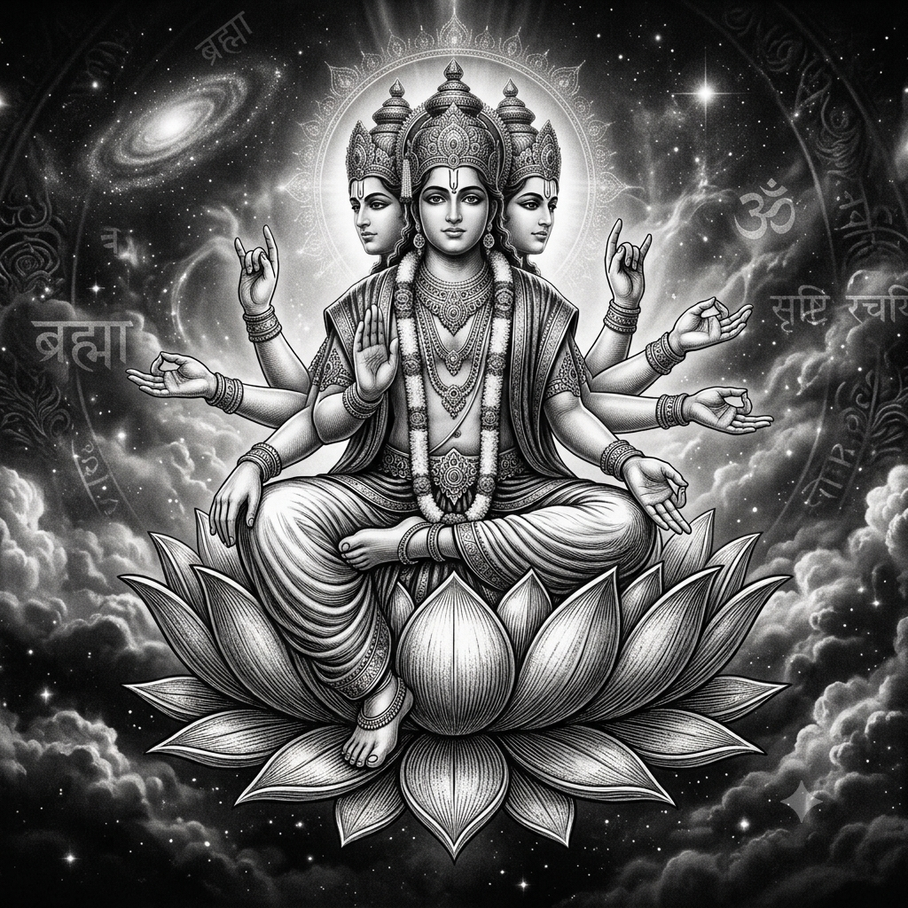
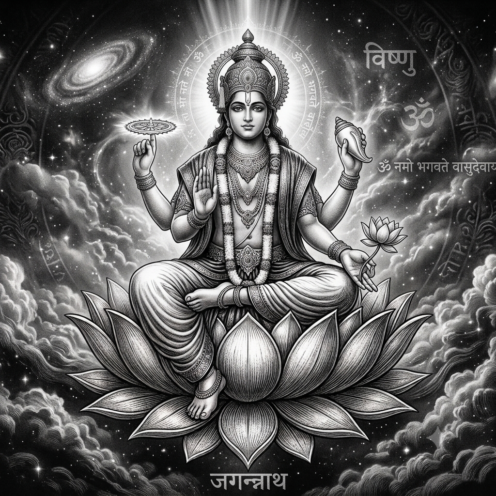
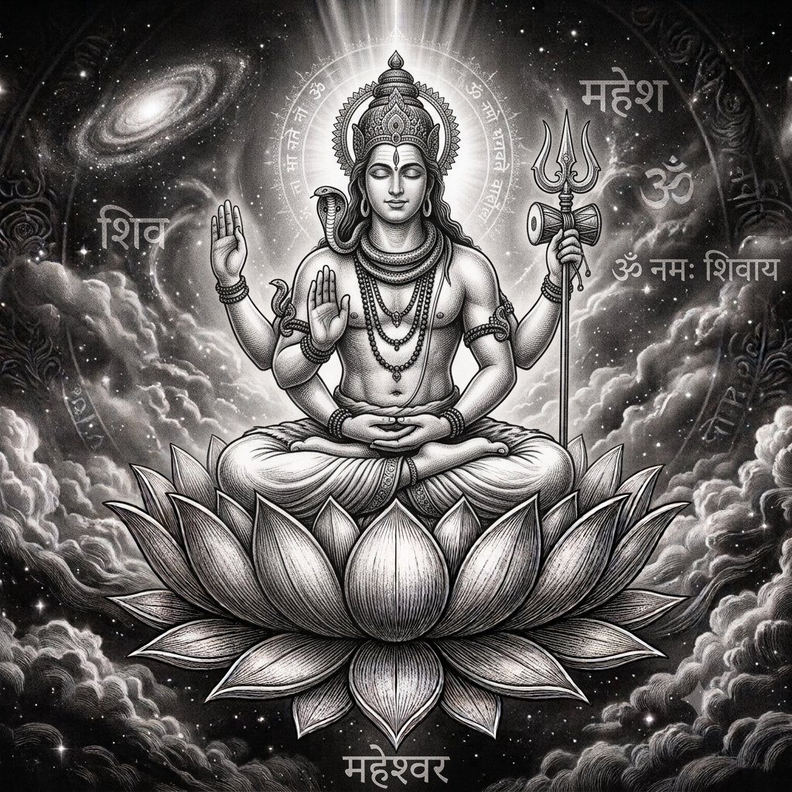

Lord Brahma
The first of the Trimurti, Brahma is the cosmic architect — he dreamed the universe into being and spoke the Vedas into existence from his four mouths.
Read the Origin ↓
The Birth of Creation
How Lord Brahma emerged from the cosmic void and gave form to all existence.
The Cosmic Egg — Hiranyagarbha
Before time began, there was nothing — only an infinite, dark ocean of nothingness. From this primordial void, a golden egg (Hiranyagarbha) appeared, floating on the cosmic waters. Within it lay the seed of all creation, glowing with potential energy that had no beginning.
"हिरण्यगर्भः समवर्ततागे" — He manifested first as the Golden EmbryoBrahma Awakens
The golden egg split open after a cosmic year, and from it emerged Brahma — self-born (Svayambhu). He found himself alone in absolute darkness. With no ground beneath him and no sky above, he sat upon the lotus that had grown from the navel of Lord Vishnu, who lay sleeping on the serpent Shesha in the cosmic ocean.
"स्वयम्भू" — The Self-Existent OneThe Four Vedas Are Spoken
Brahma grew four heads — each facing a cardinal direction — so he could see all of creation at once. From his four mouths he recited the four Vedas: Rig, Yajur, Sama, and Atharva. These sacred hymns became the blueprint of the universe — the laws of nature, dharma, ritual, and knowledge encoded in divine sound.
"चतुर्मुख" — The Four-Faced OneCreation of the Saptarishis and Manas Putras
To populate and order the universe, Brahma created the seven great sages (Saptarishis) from his mind — Marichi, Atri, Angirasa, Pulastya, Pulaha, Kratu, and Vasishtha. He also created the Prajapatis, the progenitors of all living beings. Through thought alone, he brought forth the elements, time, the celestial bodies, and the three worlds.
"प्रजापति" — Lord of All CreaturesSaraswati and the Gift of Knowledge
From Brahma's creative essence emerged Saraswati — goddess of knowledge, music, and the arts. She became both his creation and his consort, carrying the veena and the book. Together they established the foundation of learning, art, language and wisdom that would guide all beings through the cycles of existence.
"विद्यादात्री" — The Bestower of KnowledgeThe Lotus Seat
Brahma sits upon a lotus that grows from Vishnu's navel — symbolising that creation springs from the act of preservation.
The Vedas
He holds the Vedas in one hand — the eternal knowledge that precedes and outlasts every cycle of creation.
The Mala
A rosary of rudraksha beads in another hand represents the substance of time and the cycles of the cosmos.
Hamsa — The Swan
His vehicle (vahana) is the swan, which symbolises discernment — the ability to separate milk from water, truth from illusion.
Lord Vishnu
The second of the Trimurti, Vishnu sustains the cosmic order. He descends as avatars whenever dharma is threatened — from Matsya the fish to Krishna the divine statesman.
Read the Origin ↓
The Eternal Preserver
How Lord Vishnu emerged as the sustainer of all worlds and the guardian of cosmic balance.
The Cosmic Ocean — Kshira Sagara
In the beginning, Vishnu lay upon the infinite coils of Shesha Naga — the thousand-headed cosmic serpent — floating on the ocean of milk (Kshira Sagara). This was the state between two creations: the universe had dissolved, and Vishnu rested in cosmic sleep (Yoga Nidra), dreaming the next cycle into potential.
"अनन्तशायी" — He Who Sleeps on the InfiniteThe Lotus and the Birth of Brahma
As Vishnu dreamed, a lotus grew from his navel, and upon it sat Brahma, who would become the creator. In this way, Vishnu is the source from which creation itself springs — not the creator, but the ground of being that makes creation possible. He sustains what Brahma creates and what Shiva will one day dissolve.
"पद्मनाभ" — The Lotus-Naveled OneThe Dashavatara — Ten Descents
Whenever adharma (unrighteousness) rises and dharma declines, Vishnu descends to earth in a mortal form — an avatar. Matsya the fish saved the Vedas from a great flood. Kurma the tortoise bore the churning mountain on his back. Varaha the boar lifted the earth from the cosmic waters. Narasimha, half-lion half-man, destroyed the tyrant Hiranyakashipu. Through Rama and Krishna, he taught duty and love.
"यदा यदा हि धर्मस्य ग्लानिर्भवति भारत" — Whenever dharma declines, I manifestThe Churning of the Ocean — Samudra Manthan
In one of the most celebrated episodes, the Devas and Asuras churned the ocean of milk to obtain Amrita — the nectar of immortality. Vishnu took the form of Kurma to support the churning rod (Mount Mandara) on his back. When the deadly poison Halahala emerged, Shiva drank it. When Amrita appeared, Vishnu as the enchantress Mohini ensured only the Devas received it.
"क्षीरसागरमन्थन" — The Churning of the Milk OceanVishnu and Lakshmi — Eternal Consorts
From the churning of the ocean also emerged Lakshmi — radiant, seated on a lotus, choosing Vishnu as her eternal companion. Wherever Vishnu incarnates, Lakshmi incarnates alongside him: as Sita with Rama, as Rukmini with Krishna. She represents the prosperity and grace that flow from a well-ordered cosmos.
"श्रीनिवास" — The Abode of LakshmiSudarshana Chakra
The spinning disc of divine will — it never misses its target and represents the cycle of time and cosmic order.
Panchajanya — The Conch
Its sound is the primordial vibration Om. When blown, it declares the triumph of good and calls the faithful to dharma.
Padma — The Lotus
Held in one of his four hands, the lotus represents purity, beauty, and the unfolding of creation.
Garuda — The Eagle
Vishnu's mount is the king of birds — fearless, swift, and the eternal enemy of serpents. He represents speed and martial prowess.
Lord Mahesh
The third of the Trimurti, Shiva — Mahesh — is the cosmic dancer whose Tandava dissolves and recreates the universe. He is the supreme ascetic and the loving husband, the destroyer and the healer.
Read the Origin ↓
The Timeless Ascetic
How Lord Shiva — the one who was never born and will never die — stands beyond the cycle he himself dissolves.
Sadashiva — The Eternal
Unlike Brahma and Vishnu, Shiva is often described as having no origin — he is Sadashiva, the ever-auspicious, who exists before time and beyond it. In one telling, he appears as an infinite pillar of light (Jyotirlinga) that has no beginning and no end. Brahma flew upward as a swan and Vishnu dived downward as a boar, but neither could find where the pillar began or ended.
"अनादि अनन्त" — Without Beginning, Without EndThe Fierce Form — Rudra
In the Puranic telling, Brahma once desired a fierce being to protect creation. From his forehead (or from his anger, depending on the text) emerged Rudra — howling, red-faced, blazing with cosmic fury. Brahma gave him eleven forms and asked him to populate the worlds. Rudra's tears fell and became the Rudras — storm deities, embodiments of raw, untamed nature.
"रुद्र" — The Howler, The RoarerThe Wedding of Shiva and Sati
Shiva, the ascetic of Mount Kailash, had no interest in the material world. But Sati, daughter of Daksha, was devoted to him from birth. Through intense penance she won Shiva's heart, and they married. When Daksha insulted Shiva by excluding him from a great yajna, Sati immolated herself in protest. Shiva's grief was so vast that he carried her body across the cosmos in the Tandava of sorrow, until Vishnu's Sudarshana Chakra dispersed it.
"अर्धनारीश्वर" — The Lord Who Is Half WomanNeelakantha — The Blue-Throated One
During the churning of the ocean of milk, a poison so potent it could destroy all existence — Halahala — erupted from the depths. Neither the Devas nor the Asuras could contain it. Shiva stepped forward and drank the entire ocean of poison. Parvati pressed his throat to stop it from entering his body, and it stayed lodged there, turning his throat blue forever. The universe was saved by an act of self-sacrifice.
"नीलकण्ठ" — The Blue-Throated OneNataraja — The Cosmic Dance
Shiva's Tandava is not destruction for its own sake — it is the rhythm of the universe. In his dance as Nataraja, he stands within a ring of fire (the cosmos), one foot crushing Apasmara (the demon of ignorance), one hand holding the damaru (the drum of creation's heartbeat), another holding agni (the fire of dissolution). Creation and destruction are the same gesture, the same dance, the same breath.
"नटराज" — The Lord of the DanceTrishul — The Trident
Its three prongs represent creation, preservation and destruction — the three forces Shiva commands as the supreme reality.
Damaru — The Drum
The hourglass drum whose beat is the rhythm of creation. Its sound is said to be the origin of language and music.
Crescent Moon
Adorning his matted locks, the moon represents the cycle of time and Shiva's mastery over it.
Nandi — The Bull
Shiva's devoted mount and gatekeeper. Nandi embodies dharma — patient, steadfast, always facing his lord in meditation.